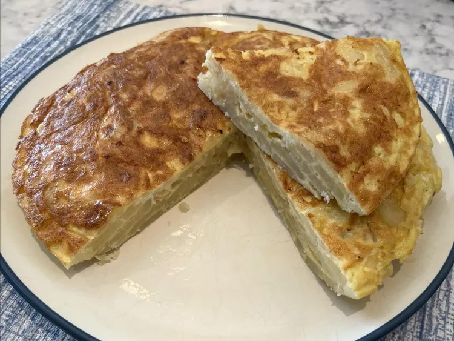

Tortilla de Patatas

La tortilla de patatas es una tortilla española hecha con patatas y cebollas en rodajas finas,
cocida en aceite de oliva y unida con una simple mezcla de huevo. Sirva caliente o a temperatura
ambiente para una deliciosa tapa o aperitivo.
Ingredientes
- 2 Taza de Aceite oliva
- 2 Libras de Papa peladas y cortadas en rodajas finas
- 1 Cebolla mediana, Cortada en rodajas finas
- Sal
- 6 Huevos
Pasos
- Caliente el aceite en una olla honda a fuego medio-alto hasta que casi humee, de 2 a 4 minutos. Agrega las papas y la cebolla; Deben estar en su mayor parte cubiertos de aceite. Sazone con 1 ½ cucharaditas de sal. Cocine, revolviendo ocasionalmente y manteniendo a fuego lento, hasta que las papas estén tiernas con un tenedor, de 8 a 12 minutos; no cocine demasiado.
- Escurre la mezcla de papa y cebolla en un colador; reserve el aceite para otro uso o deseche. Deje enfriar durante unos minutos, luego pruebe y sazone con más sal, si es necesario.
- Mientras tanto, rompa los huevos en un tazón grande y sazone con la 1/2 cucharadita de sal restante; batir hasta que esté bien batido. Agregue la mezcla de papa y cebolla y revuelva para cubrir.
- Calienta una sartén antiadherente de 10 pulgadas a fuego alto. Agregue 1 cucharadita de aceite de oliva y luego vierta la mezcla de huevo y papa. Nivelarlo con una espátula y cocinar por 1 minuto. Reduzca el fuego a medio-bajo y cocine durante unos 5 minutos. Pasa una espátula de goma por los bordes exteriores para asegurarte de que no se pegue y para ayudar a que tome su forma.
- Una vez que comience a endurecerse en los bordes y en el centro (aunque todavía estará un poco líquido), coloque un plato grande sobre la sartén. Voltee la tortilla sobre el plato y luego deslícela nuevamente en la sartén. Use la espátula para ayudar a presionar los bordes hacia adentro y hacia abajo, para mantener un borde redondeado. Cocine a fuego alto durante 1 minuto, luego reduzca a bajo y cocine hasta que se sienta cuajado en el centro y al insertar un cuchillo en el centro salga limpio, de 2 a 3 minutos más.